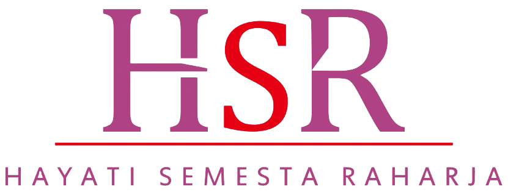

PT. Hayati Semesta Raharja
Your Partner in Healthcare Business
Laporan Kerja Magang
Rancang Bangun
MANSYS
untuk
Inventarisasi Aset
dan Pemantauan Progres Pekerjaan pada PT. Hayati Semesta Raharja
Mulai Presentasi
MANSYS
Atila Fazrul Falah · PT. HSR
Pendahuluan
01 / 21